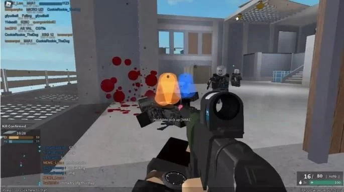

Phantom Forces

Se faltava uma opção de jogo de tiro em primeira pessoa, experimente Phantom
Forces: Pacific Forces. Ele possui sistemas completos com vários modos
de jogo, além de armas para desbloquear e melhorar a sua ofensiva nos combates.
Página anterior
Próxima página
Voltar para a página principal